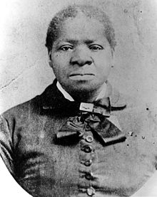

Missionaries from The Church of Jesus Christ of Latter-day Saints (Mormon) proselytized in Mississippi. They taught Smith and his wealthy family and they converted. Slaves were not baptized in the church as a matter of policy. Members were encouraged to free
their slaves, but Smith chose not to do so.The Smith household joined a group of other church members from Mississippi to meet the Mormon exodus from Nauvoo, Illinois, in 1847. The group traveled to Pueblo, Colorado, and joined up with the sick detachment
from the Mormon Battalion. They later joined the main body of Mormons crossing the plains and settled in the Salt Lake Valley, Utah Territory.Church leader Brigham Young sent a group of Mormons to Southern California in 1851. Robert Smith, his family, and his
slaves joined them in San Bernardino, California, sometime later. Bridget was among a large group of slaves in the San Bernardino settlement. As part of the Compromise of 1850, California was admitted as a free state and any slave who resided in the state or
was born in the state was free. Bridget had lived in California for four years and some of the other slaves had been born in California, so they were covered by the la] Bridget wanted to be free, but was under the control of Robert Smith and ignorant of the laws
and her rights.she was from her mother.Bridget, helped by friends, attempted to escape from Smith. She and a group of Smith's other slaves traveled towards Los Angeles before Smith caught up with them. He took her and the other slaves and camped in canyon
near Santa Monica. One of his slaves, Hannah, was having a baby which made it difficult to travel. Lizzy Flake Rowan, who had also been kept in slavery with Biddy in San Bernardino but had since been set free, told Frank Dewitt, the sheriff of Los Angeles country
, of Smith's plans. He issued a writ of habeas corpus and sent a local posse, who caught up with Smith and took the slaves into protective custody.Bridget petitioned a Los Angeles court for her freedom. Smith claimed that Bridget was her family and she wanted to
go to Texas.He then bribed her lawyer to not show up.[4] She was not allowed to testify in crt, since California law prohibited black people from testifying against white people. The judge presiding over the case, Benjamin Ignatius Hayes, interviewed Bridget and
found she did not want to go to Texas and granted her freedom as a resident of a free state,as well as the freedom of the other slaves held captive by Smith (Bridget's three daughters—Ellen, Ann, and Harriet—and ten other African-American women and
children). In 1860, Mason received a certified copy of the document that guaranteed her freedom.Bridget had no legal last name as a slave. After emancipation, she chose to be known as Bridget Biddy Mason. Mason was the middle name of Amasa
Lyman, Mormon apostle and mayor of San Bernardino.Biddy had spent many years in the company of Lyman's household.After becoming free, she worked in Los Angeles as a nurse and midwife. One of her employers was the noted physician John Strother
Griffin. Saving carefully, she was one of the first African Americans to purchase land in the city. As a businesswoman, she amassed a relatively large fortune of nearly $300,000, which she shared generously with charities. Mason also fed and sheltered the poor,
and visited prisoners. She was instrumental in founding a traveler's aid center, and an elementary school for black children.Because of her kind and giving spirit, many called her "Auntie Mason" or "Grandma Mason."In 1872, Mason was a founding member of First
African Methodist Episcopal Church of Los Angeles, the city's first black church. The organizing meetings were held in her home on Spring Street.She donated the land on which the church was built. This land is now the site of Biddy Mason Park, a Los Angeles
city park and site of an art installation describing her life. Mason spoke fluent Spanish and was a well-known figure in the city. She dined on occasion at the home of Pio Pico, the last governor of Alta California and a wealthy Los Angeles land owner.After Mason's
death on January 15, 1891, she was buried in an unmarked grave in Boyle Heights. On March 27, 1988, in a ceremony attended by the mayor of Los Angeles and members of the church she founded, the grave was marked with a tombstone.Mason is an honoree
in the California Social Work Hall of Distinction. She was also celebrated on Biddy Mason Day on November 16, 1989.Biddy Mason was born a slave on August 15, 1818, in GeorgiaShe was given the name of "Bridget" with no surname and was given to Robert
Smith and his bride as a wedding present. After the marriage, Smith took his new wife and slaves to Mississippi.One of artist Sheila Levrant de Bretteville's best-known pieces is "Biddy Mason's Place: A Passage of Time,” an 82-foot concrete wall with embedded
objects in downtown Los Angeles (near where Mason lived) that tells the story of Mason's life.